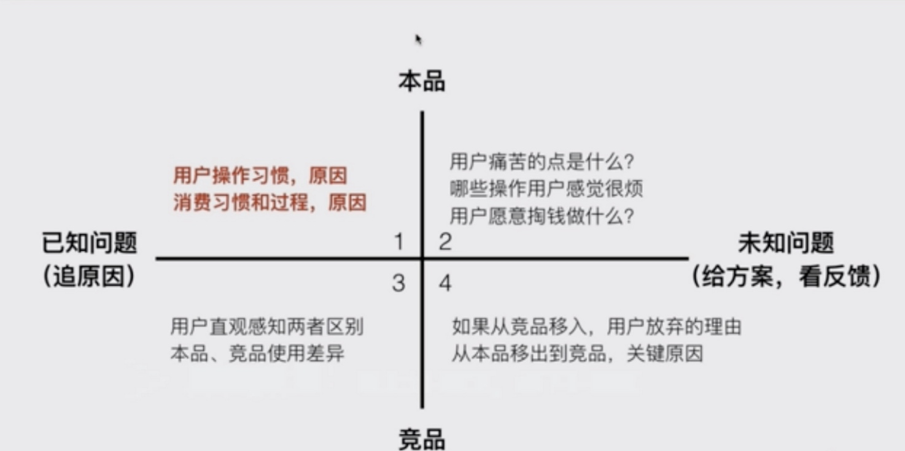
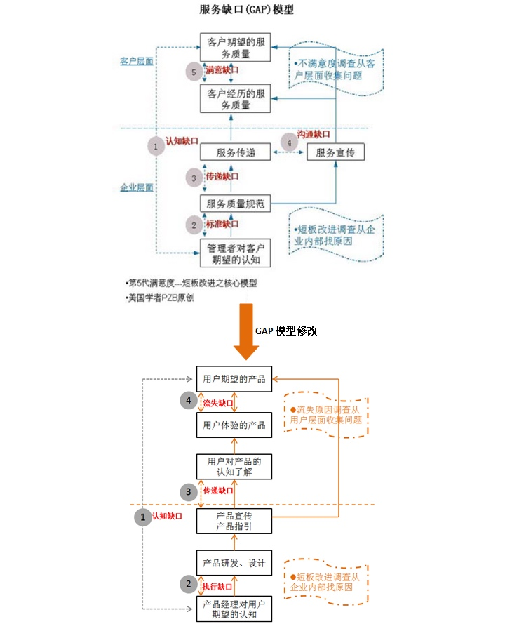

为什么要用户调研
- 了解用户对产品的使用过程
- 了解目标用户群使用场景和过程
- 总结用户的问题和流程
- 提出最合理的解决方案
用户调研全过程
- 明确背景和目的
- 选择目标用户
- 分析用户和问题
- 准备调研内容
- 现场调研
- 总结报告
用户调研全过程
- 背景：什么情况下发起的调研?是否必须通过调研来解决？
- 目的：通过用户调研希望得到的结果是什么？
- 忌大而全：调研的方向越聚焦，越有价值
- 忌家大空：针对行业用户的调研 ，针对满意度的调研，价值都不大
| bad | 原因 | good |
|---|---|---|
| 对本站用户 做针对性调研 | 目的不明确 | * 在支付阶段用户流失原因调研分析 * 用户在不同在线学习平台学习过程调研 |
| 做北京地区女性用户使用情况调研 | 背景不明确 | 北京地区女性下单转化率很高，调研其在平台购买路径分析 |
| O2O 行业用户使用习惯调研 | 大而全 | * 京东到家超市业务白领女性消费习惯调研 |
选择目标用户
- 典型用户：通过简单的用户画像，找出典型用户
- 目标用户：时间、地点、配合程度
- 邀约用户：直接说明目的，并告知可能发生的情况
- 用户数量：不宜扫网式，一般5-10个
猜测用户问题 设定题目
- 用户可能的问题：用户的使用行为表现
- 可能的解决方案：猜测解决用户问题的手段
- 确定访问提纲：聚焦且开放的问题
- 问题数量：线上10-20，线下5-10 展开
准备调研内容
- 本品已知问题：用户操作习惯、消费习惯和过程，原因
- 本品未知问题：用户的痛点是什么？哪些操作用户很烦，用户愿意掏钱做什么？
- 竞品已知问题：用户直观感知两者区别，竞品使用差异
- 竞品已知问题：如果从竞品移入，用户放弃理由。从本品移到竞品，原因？

现场调研
- 了解用户使用的过程：最好观察用户的行为
- 提问：对关键行为、预设问题进行提问
- 反馈：对有效的信息反馈给用户，并深究
让用户完成明确的任务
- 给用户一到两个明确的任务（基于你之前对用户 的分析）
- 让用户自行使用并完成任务（不做任何主动指导和讲解）
- 从用户完成任务的过程中，从场景中发现问题
- 不同类型的用户，尽量分开做，不同的任务分开做
分析用户卡住的原因 猜测可能的问题
- 重点关注异常行为
- 重点关注用户的表现
- 重点关注用户的表情
比如停留时间长，来回切换，用户放弃任务
用户试图解决什么问题 ？为什么
- 用户拿到任务之后，是怎么思考得
- 认为需要完成工作，大约需要怎么做
- 针对关键点，完整描述对象 ，并提问
- 追问为什么
- 完成一个行为和问题收集
- 在一个完整路径上追问
- 用聚焦且开放的问题，引导用户说出自己的想法
- 打破砂锅问到底
用户觉得有什么方法能更好的解决问题
- 机遇用户完成任务的过程中遇到的问题
- 用户任务可以怎么做，会更好提升体验
- 继续追问为什么
- 演示新的解决方案看用户的感受
调研报告
- 单个用户：记录单用户调研情况
- 整体情况：汇总用户调研的过程和结论
- 行动计划：分享并提出行动计划
用户调研的常见误区
- 指望从用户调研中获取需求是产品经理懒惰的表现
- 用户调研不等于用户访谈，访谈只是其中的一种方式
- 把个体当整体
- 从用户调研中找自我感觉的证明
- 用户调研的结论不要谈占比
忌讳
- 直接问用户想要什么，有什么需求
- 直接问用户有没有用，好不好用
- 快速打断用户
- 说服用户
如何让用户开口
- 让用户讲自己 的经历，把用户当采访对象
- 鼓励，少打断，多鼓励用户表达，期待的眼神
- 刺激，说反话，聊对立的用户，让用户表达看法
设计改善措施

- 认知缺口：产品经理不知道用户想要的是什么。若出现了认知缺口，则首先是让产品经理清楚知道用户流失的真正原因。
- 执行缺口：产品经理知道用户想要什么，但实际做出来的产品与设计中的不一致。若出现了执行缺口，则要了解具体哪个执行步骤出现问题，是资源的欠缺还是技术难以实现。
- 传递缺口：产品的宣传和指引不能让用户对产品真正认知了解若出现了传递缺口，则要了解用户现在的感知是怎么样的，在哪些宣传和指引上出现了问题。
- 流失缺口：用户体验到的产品和期望的不一样。